Nakon klika na dugme "Aktuelno", korisniku se prikazuje pregled aktuelnih manifestacija.
Prikaz manifestacije je odrađen tabelarno, gde je za svaku manifestaciju ispisana tema manifestacije, lokacija, broj gostiju, datum, ime i prezime klijenta, kao i dugme "Pogledaj".
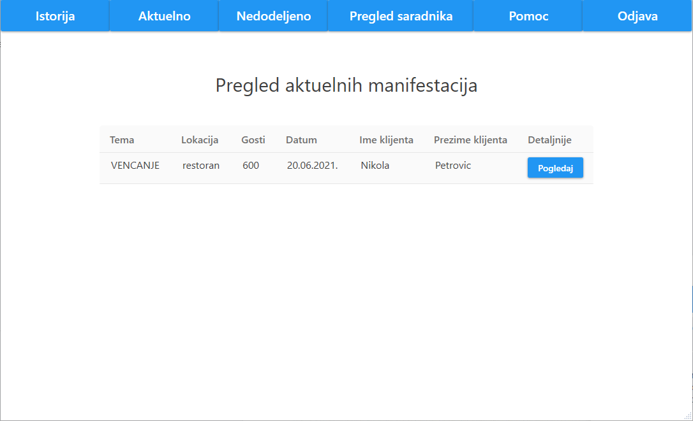Ukoliko organizator želi detaljniji prikaz specifične manifestacije, njemu je to omogućeno klikom na dugme "Pogledaj".

Ovaj prikaz sadrži sve opšte informacije za datu aktuelnu manifestaciju, što podrazumeva mesto održavanja, budžet, broj gostiju, temu, dekoraciju, muziku, dodatne zahteve, datum održavanja, raspored gostiju i sve uključene ponude.
Pored opšte informacije, nalazi se i ukupna cena manifestacije, dugmad "Nazad", "Predloži završeno" i "Dodaj ponudu", lista komentara i polje za organizatora da ostavi svoj komentar.
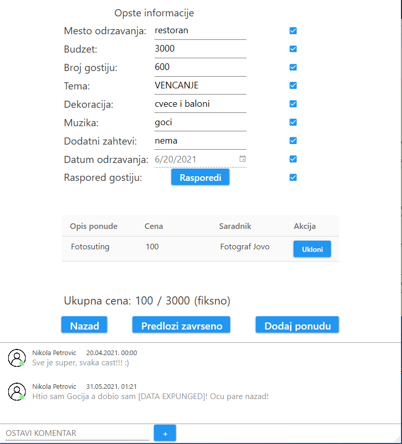Pritiskom na dugme "Rasporedi" pored labele "Raspored gostiju", organizatoru će se pojaviti prozor sa detaljnim prikazom mesta održavanja manifestacije u kojem je omogućeno organizatoru da rasporedi goste.
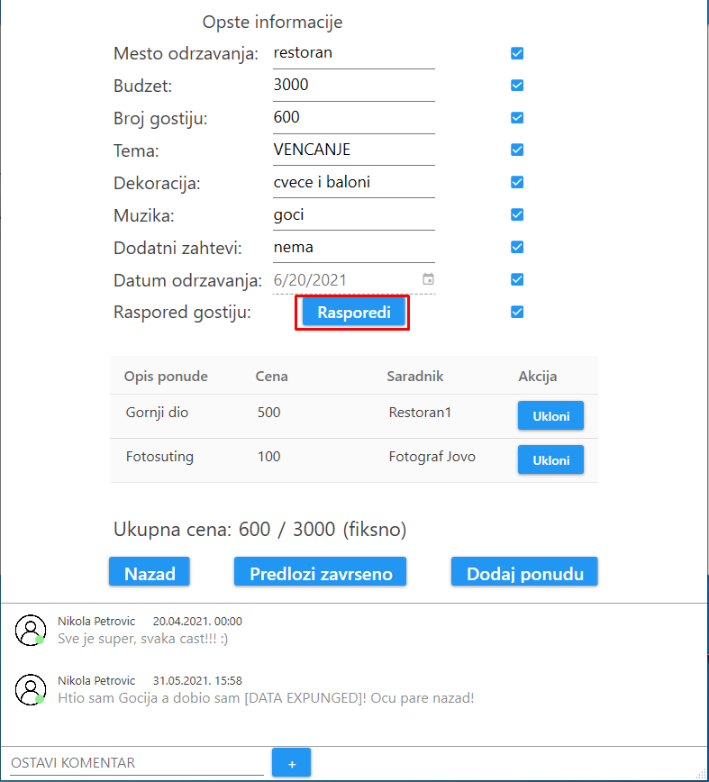Ovaj prozor sadrži sliku šematskog plana restorana, gde su svi stolovi numerisani.
Sa desne strane prozora nalazi se spisak gostiju kojima još uvek nije dodeljen sto.
Ispod slike šematskog plana nalazi se detaljan opis svakog stola. Ovaj opis sadrži broj stola, kapacitet i gde se taj sto nalazi u restoranu. Pored toga napisana su i imena gostiju koja su smeštena za tim stolom.
Organizator može da prevuče nekog od nedodeljenih gostiju za željeni sto, ukoliko kapacitet mesta nije popunjen.
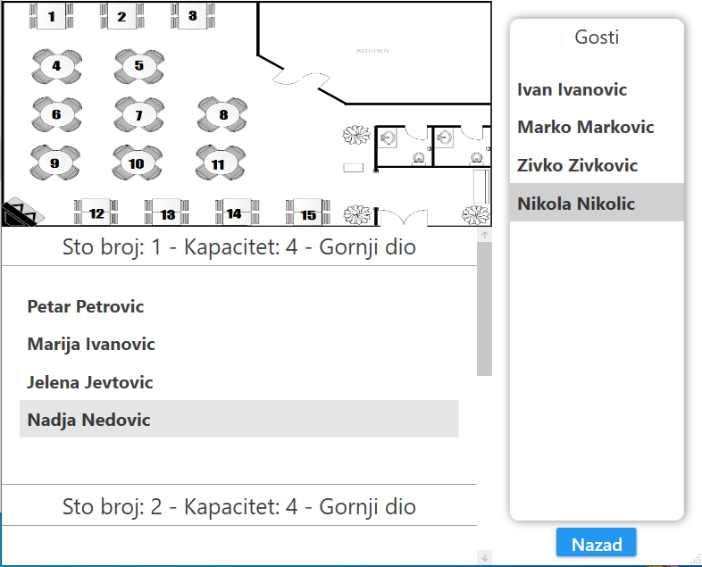Klikom na dugme "Nazad", organizatoru se zatvara prozor.
Pored svake stavke opšte informacije manifestacije nalazi se polje za potvrdu.
Ukoliko organizator otkači polje, to znači da je data stavka završena.
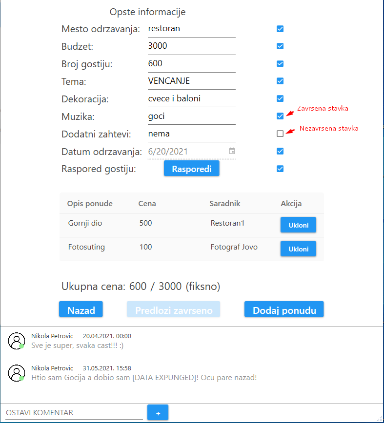Klikom na dugme "Predloži završeno", organizator može da predloži zavšenu manifestaciju, koja se dalje šalje klijentu na uvid.
Da bi se organizatoru omogućilo slanje manifestacije korisniku, neophodno je da sve opšte informacije manifestacije budu završene.
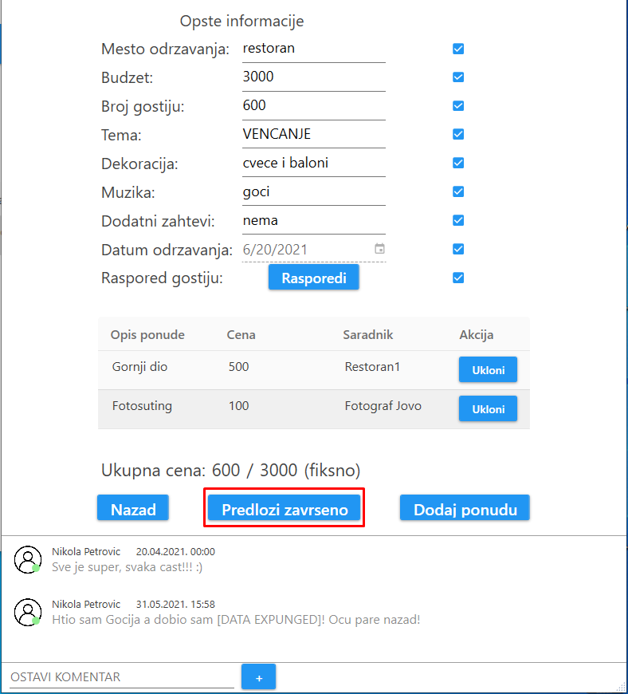Klikom na dugme "Dodaj ponudu", organizatoru se otvara prozor sa prikazom saradnika i njihovih ponuda koje može dodati za manifestaciju.
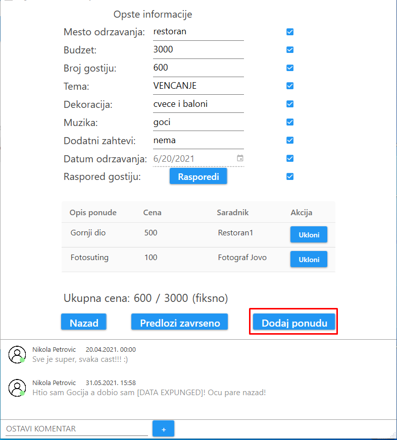Ovaj prozor sadrži tabelarni prikaz ponuda za svakog saradnika.
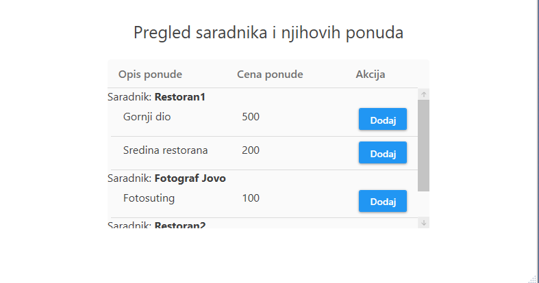Klikom na dugme "Dodaj" koja se nalazi u svakoj ponudi, organizator može da doda ponudu u manifestaciju.
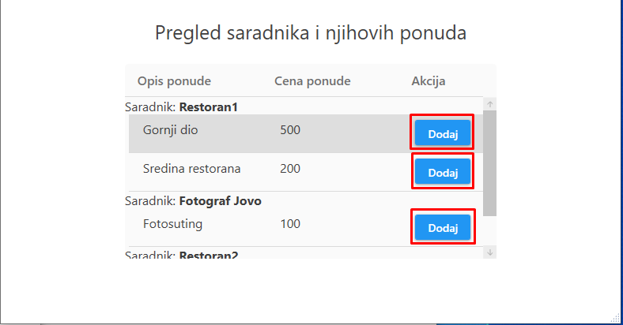Administrator može da ukloni ponudu klikom na dugme "Ukloni" za odgovarajuću ponudu u pregledu aktuelne manifestacije.
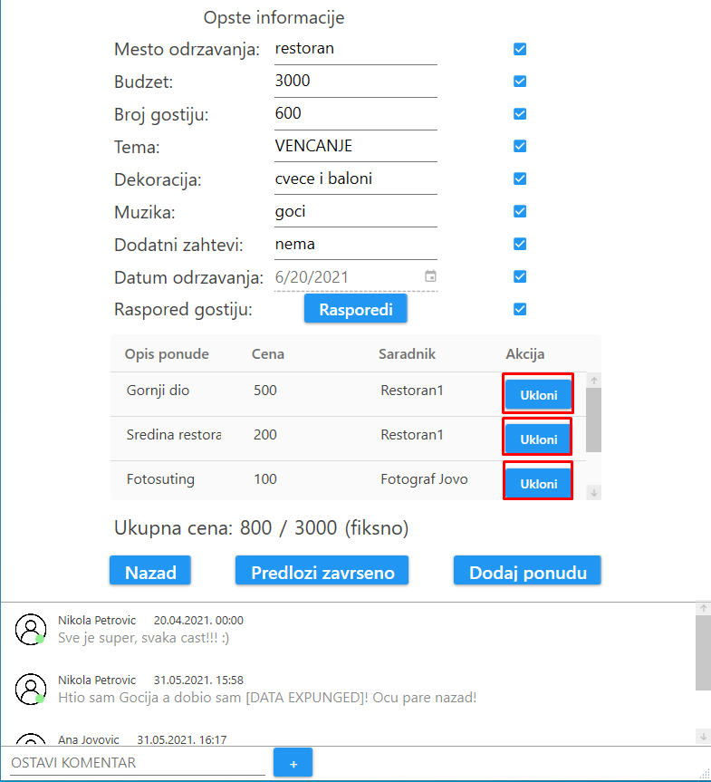Na samom dnu prozora nalazi se polje za ostavljanje komentara.
Organizator moze da napiše komentar i da ga postavi pritiskom na dugme "+".
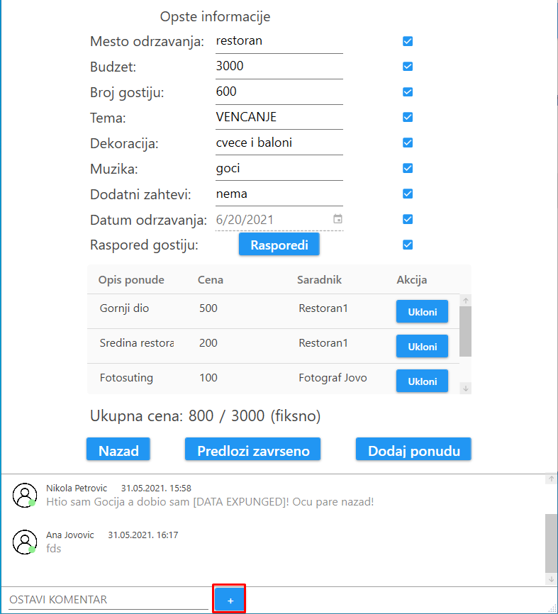Klikom na dugme "Nazad", organizatoru se zatvara prozor.
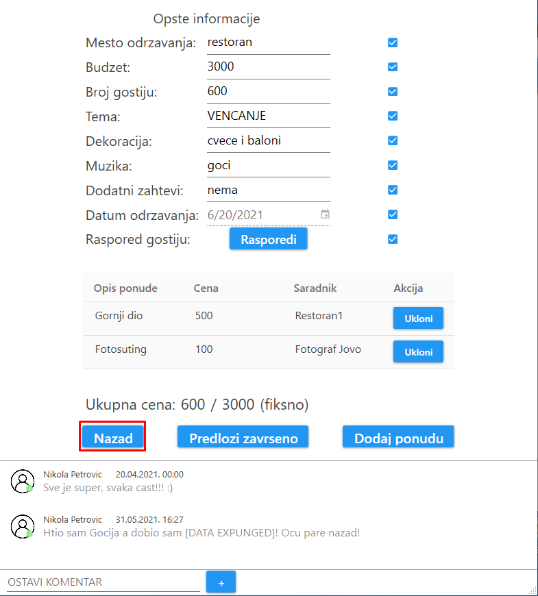